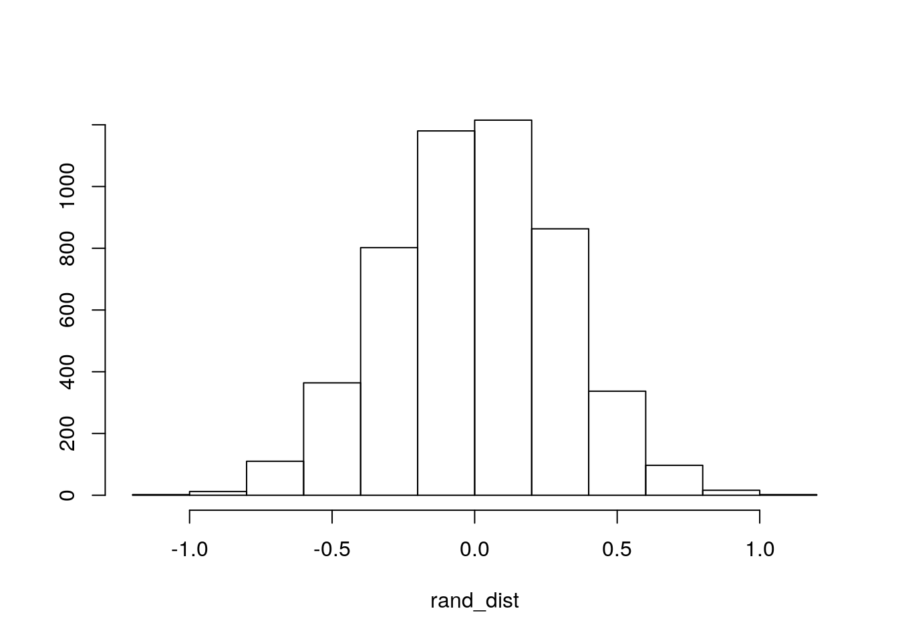
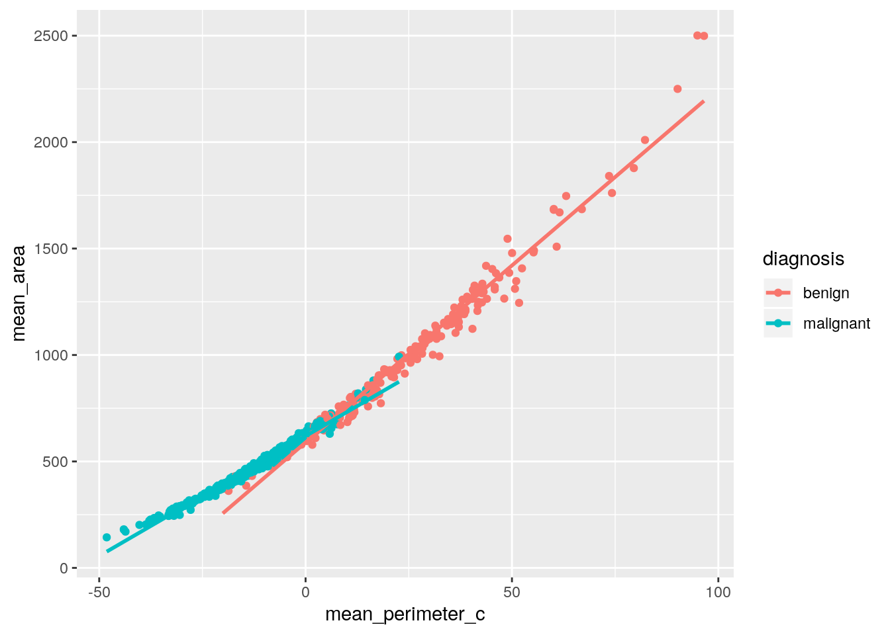
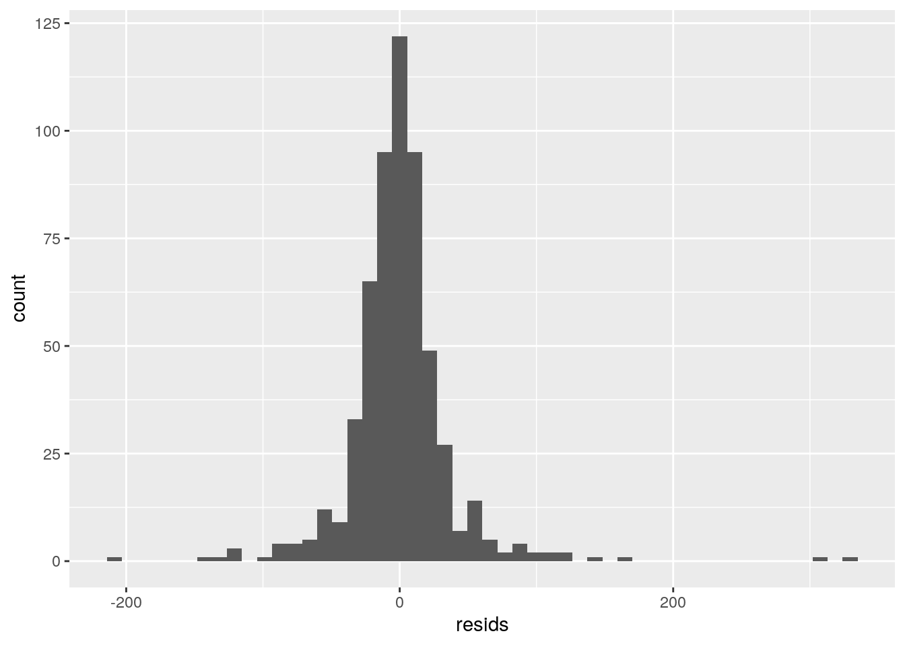
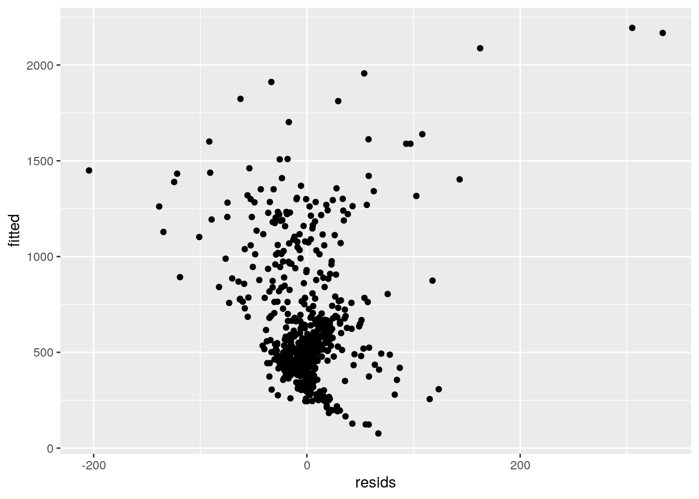
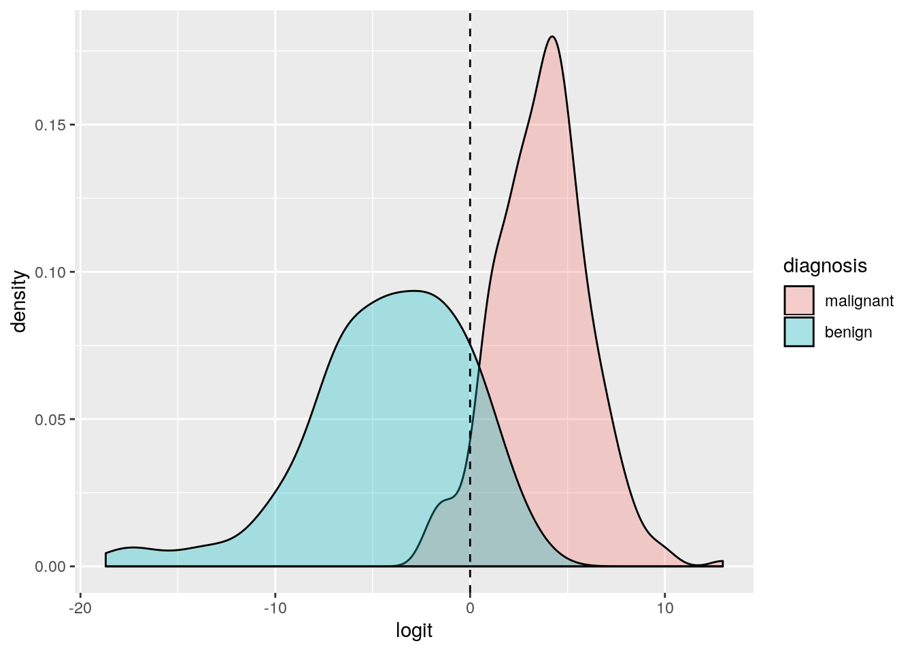
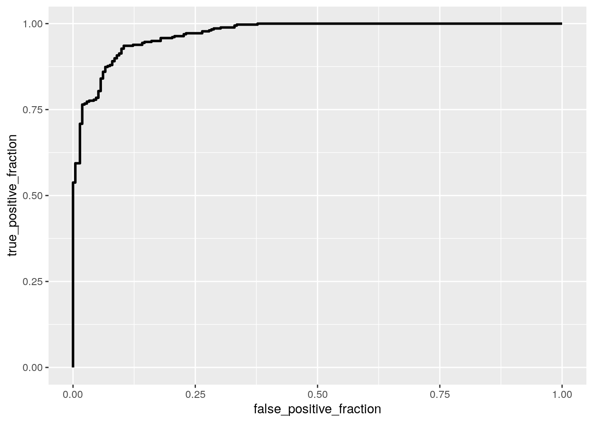

0.) For this project, I am using a breast cancer dataset. It contains 5 numeric variables and 1 categorical variable. The categorical variable is “diagnosis”, which tells us whether the breast lump was found to be malignant or benign. The 5 numeric variables are mean_radius, mean_texture, mean_perimeter, mean_area, and mean_smoothness. Mean_radius is the mean of distances from the center of the mass to points on the perimeter. Mean_texture is the standard deviation of gray-scale values. Mean_perimeter is the mean size of the core tumor. Mean_area is the mean area of the core tumor. Mean_smoothness is the mean of local variation in radius lengths. There are 569 observations for each variable.
library(dplyr)
library(tidyverse)
bc_dataset <- read_csv("Breast_cancer_dataset.csv")
covmats <- bc_dataset %>% group_by(diagnosis) %>% do(covs = cov(.[2:3]))
for (i in 1:2) {
print(as.character(covmats$diagnosis[i]))
print(covmats$covs[i])
}## [1] "benign"
## [[1]]
## mean_texture mean_perimeter
## mean_texture 14.284393 9.142258
## mean_perimeter 9.142258 477.625870
##
## [1] "malignant"
## [[1]]
## mean_texture mean_perimeter
## mean_texture 15.961021 -1.883254
## mean_perimeter -1.883254 139.415582man1 <- manova(cbind(mean_radius, mean_texture, mean_perimeter,
mean_area, mean_smoothness) ~ diagnosis, data = bc_dataset)
summary(man1)## Df Pillai approx F num Df den Df Pr(>F)
## diagnosis 1 0.64649 205.92 5 563 < 2.2e-16 ***
## Residuals 567
## ---
## Signif. codes: 0 '***' 0.001 '**' 0.01 '*' 0.05 '.' 0.1 ' ' 1summary.aov(man1)## Response mean_radius :
## Df Sum Sq Mean Sq F value Pr(>F)
## diagnosis 1 3759.3 3759.3 646.98 < 2.2e-16 ***
## Residuals 567 3294.6 5.8
## ---
## Signif. codes: 0 '***' 0.001 '**' 0.01 '*' 0.05 '.' 0.1 ' ' 1
##
## Response mean_texture :
## Df Sum Sq Mean Sq F value Pr(>F)
## diagnosis 1 1811.2 1811.25 118.1 < 2.2e-16 ***
## Residuals 567 8696.1 15.34
## ---
## Signif. codes: 0 '***' 0.001 '**' 0.01 '*' 0.05 '.' 0.1 ' ' 1
##
## Response mean_perimeter :
## Df Sum Sq Mean Sq F value Pr(>F)
## diagnosis 1 184959 184959 697.24 < 2.2e-16 ***
## Residuals 567 150411 265
## ---
## Signif. codes: 0 '***' 0.001 '**' 0.01 '*' 0.05 '.' 0.1 ' ' 1
##
## Response mean_area :
## Df Sum Sq Mean Sq F value Pr(>F)
## diagnosis 1 35358547 35358547 573.06 < 2.2e-16 ***
## Residuals 567 34984592 61701
## ---
## Signif. codes: 0 '***' 0.001 '**' 0.01 '*' 0.05 '.' 0.1 ' ' 1
##
## Response mean_smoothness :
## Df Sum Sq Mean Sq F value Pr(>F)
## diagnosis 1 0.014444 0.0144443 83.651 < 2.2e-16 ***
## Residuals 567 0.097906 0.0001727
## ---
## Signif. codes: 0 '***' 0.001 '**' 0.01 '*' 0.05 '.' 0.1 ' ' 1bc_dataset %>% group_by(diagnosis) %>% summarize(mean(mean_radius),
mean(mean_texture), mean(mean_perimeter), mean(mean_area),
mean(mean_smoothness))## # A tibble: 2 x 6
## diagnosis `mean(mean_radi… `mean(mean_text… `mean(mean_peri… `mean(mean_area…
## <chr> <dbl> <dbl> <dbl> <dbl>
## 1 benign 17.5 21.6 115. 978.
## 2 malignant 12.1 17.9 78.1 463.
## # … with 1 more variable: `mean(mean_smoothness)` <dbl>pairwise.t.test(bc_dataset$mean_radius, bc_dataset$diagnosis,
p.adj = "none")##
## Pairwise comparisons using t tests with pooled SD
##
## data: bc_dataset$mean_radius and bc_dataset$diagnosis
##
## benign
## malignant <2e-16
##
## P value adjustment method: nonepairwise.t.test(bc_dataset$mean_texture, bc_dataset$diagnosis,
p.adj = "none")##
## Pairwise comparisons using t tests with pooled SD
##
## data: bc_dataset$mean_texture and bc_dataset$diagnosis
##
## benign
## malignant <2e-16
##
## P value adjustment method: nonepairwise.t.test(bc_dataset$mean_perimeter, bc_dataset$diagnosis,
p.adj = "none")##
## Pairwise comparisons using t tests with pooled SD
##
## data: bc_dataset$mean_perimeter and bc_dataset$diagnosis
##
## benign
## malignant <2e-16
##
## P value adjustment method: nonepairwise.t.test(bc_dataset$mean_area, bc_dataset$diagnosis, p.adj = "none")##
## Pairwise comparisons using t tests with pooled SD
##
## data: bc_dataset$mean_area and bc_dataset$diagnosis
##
## benign
## malignant <2e-16
##
## P value adjustment method: nonepairwise.t.test(bc_dataset$mean_smoothness, bc_dataset$diagnosis,
p.adj = "none")##
## Pairwise comparisons using t tests with pooled SD
##
## data: bc_dataset$mean_smoothness and bc_dataset$diagnosis
##
## benign
## malignant <2e-16
##
## P value adjustment method: none# Ran 1 MANOVA, 5 ANOVA, and 10 t tests Probability of at
# least 1 type-I error
1 - (0.95^16)## [1] 0.5598733# Bonferroni adjusted significance level
0.05/16## [1] 0.0031251.) I performed 16 different tests. One test was a MANOVA and since all of the numeric variables appeared to show a mean difference across my diagnosis variable, I performed 5 ANOVAs. I also performed 10 post-hoc t-tests. Based on the results of the ANOVAs and t-tests, both groups differ. Since I performed 16 different tests, the bonferroni adjusted significance level is 0.003125. The probability of having at least one Type I error is about 0.55987. Even with these adjustments, the results of my tests are still significant.
For the MANOVA, it is very unlikely that I met all of the assumptions since they are both hard to test and hard to meet. The ANOVA assumptions are random sample/independent observations, independed samples, normal distribution or large sample, and equal variance. Based on my large sample size and independent obervations and samples, I believe that I meet all of the ANOVA assumptions.
# Null hypothesis: Mean radius is the same for benign vs.
# malignant patients. Alternative hypothesis: Mean radius is
# different for benign vs. maligant patients.
bc_dataset %>% group_by(diagnosis) %>% summarize(means = mean(mean_radius)) %>%
summarize(`mean_diff:` = diff(means))## # A tibble: 1 x 1
## `mean_diff:`
## <dbl>
## 1 -5.32set.seed(348)
rand_dist <- vector()
for (i in 1:5000) {
new <- data.frame(radius = sample(bc_dataset$mean_radius),
diagnosis = bc_dataset$diagnosis)
rand_dist[i] <- mean(new[new$diagnosis == "malignant", ]$radius) -
mean(new[new$diagnosis == "benign", ]$radius)
}
mean(rand_dist > 5.3163 | rand_dist < -5.3163)## [1] 0{
hist(rand_dist, main = "", ylab = "")
abline(v = -5.3163, col = "red")
} 2.) For this randomization test, the null hypothesis is that mean radius is the same for benign vs. malignant patients. The alternative hypothesis is that mean radius is different for benign vs. maligant patients.
Based on these results, we are unable to reject the null hyothesis that mean radius is the same for benign vs. malignant patients. We cannot reject since the p-value is not < 0.05.
# mean centering
bc_dataset$mean_radius_c <- bc_dataset$mean_radius - mean(bc_dataset$mean_radius)
bc_dataset$mean_texture_c <- bc_dataset$mean_texture - mean(bc_dataset$mean_texture)
bc_dataset$mean_perimeter_c <- bc_dataset$mean_perimeter - mean(bc_dataset$mean_perimeter)
bc_dataset$mean_area_c <- bc_dataset$mean_area - mean(bc_dataset$mean_area)
bc_dataset$mean_smoothness_c <- bc_dataset$mean_smoothness -
mean(bc_dataset$mean_smoothness)
# linear regression
fit <- lm(mean_area ~ diagnosis * mean_perimeter_c, data = bc_dataset)
summary(fit)##
## Call:
## lm(formula = mean_area ~ diagnosis * mean_perimeter_c, data = bc_dataset)
##
## Residuals:
## Min 1Q Median 3Q Max
## -204.31 -15.99 -1.06 13.32 333.68
##
## Coefficients:
## Estimate Std. Error t value Pr(>|t|)
## (Intercept) 589.5159 3.8953 151.341 < 2e-16 ***
## diagnosismalignant 29.8110 5.0176 5.941 4.95e-09 ***
## mean_perimeter_c 16.6206 0.1218 136.456 < 2e-16 ***
## diagnosismalignant:mean_perimeter_c -5.3538 0.2120 -25.249 < 2e-16 ***
## ---
## Signif. codes: 0 '***' 0.001 '**' 0.01 '*' 0.05 '.' 0.1 ' ' 1
##
## Residual standard error: 38.67 on 565 degrees of freedom
## Multiple R-squared: 0.988, Adjusted R-squared: 0.9879
## F-statistic: 1.549e+04 on 3 and 565 DF, p-value: < 2.2e-16# plot of linear regression
bc_dataset %>% ggplot(aes(mean_perimeter_c, mean_area, color = diagnosis)) +
geom_point() + geom_smooth(method = "lm", se = F)
# assumptions normality
resids <- lm(mean_area ~ diagnosis * mean_perimeter_c, data = bc_dataset)$residuals
ggplot() + geom_histogram(aes(resids), bins = 50)
## linearity
fitted <- lm(mean_area ~ diagnosis * mean_perimeter_c, data = bc_dataset)$fitted.values
ggplot() + geom_point(aes(resids, fitted))
## bp test for homoskedasticity
library(sandwich)
library(lmtest)
bptest(fit)##
## studentized Breusch-Pagan test
##
## data: fit
## BP = 105.18, df = 3, p-value < 2.2e-16# uncorrected SEs
summary(fit)$coef[, 1:2]## Estimate Std. Error
## (Intercept) 589.515888 3.8952882
## diagnosismalignant 29.810963 5.0175898
## mean_perimeter_c 16.620568 0.1218014
## diagnosismalignant:mean_perimeter_c -5.353773 0.2120369# corrected SE
coeftest(fit, vcov = vcovHC(fit))[, 1:2]## Estimate Std. Error
## (Intercept) 589.515888 7.8039553
## diagnosismalignant 29.810963 8.2151831
## mean_perimeter_c 16.620568 0.4056488
## diagnosismalignant:mean_perimeter_c -5.353773 0.4341074# variation in outcome explained by model
summary(fit)##
## Call:
## lm(formula = mean_area ~ diagnosis * mean_perimeter_c, data = bc_dataset)
##
## Residuals:
## Min 1Q Median 3Q Max
## -204.31 -15.99 -1.06 13.32 333.68
##
## Coefficients:
## Estimate Std. Error t value Pr(>|t|)
## (Intercept) 589.5159 3.8953 151.341 < 2e-16 ***
## diagnosismalignant 29.8110 5.0176 5.941 4.95e-09 ***
## mean_perimeter_c 16.6206 0.1218 136.456 < 2e-16 ***
## diagnosismalignant:mean_perimeter_c -5.3538 0.2120 -25.249 < 2e-16 ***
## ---
## Signif. codes: 0 '***' 0.001 '**' 0.01 '*' 0.05 '.' 0.1 ' ' 1
##
## Residual standard error: 38.67 on 565 degrees of freedom
## Multiple R-squared: 0.988, Adjusted R-squared: 0.9879
## F-statistic: 1.549e+04 on 3 and 565 DF, p-value: < 2.2e-163.) Based on this model, we see that the mean area in the malignant diagnosis group is 5.94 higher than the benign diagnosis group. We can also see that for every one unit increase in mean perimeter, there is a 16.62 increase in mean area. The slope for mean perimeter on area is 5.35 lower for malignant patients than benign patients.
The mound shape, with the exeption of a slight outlier, allows us to confirm that assumption for normality is met. There is some clustering and some flaring out so linearity is most likely not met. Since the null hypothesis of the Breusch-Pagan test is that the model is homoskedastic and p is < 0.5, we reject the null hypothesis and determine that the model does not meet the assumption for homoskedasticity.
By recomputing the regression results with robust standard errors, we get corrected standard errors. The estimates are the same as with uncorrected SEs. Standard errors are larger when corrected since we do not meet the homoskedasticity assumption and we need to compensate for that.
According to my model, about 0.988 of variation in mean area is explained by the overall model.
# uncorrected SEs
summary(fit)$coef[, 1:4]## Estimate Std. Error t value
## (Intercept) 589.515888 3.8952882 151.340763
## diagnosismalignant 29.810963 5.0175898 5.941291
## mean_perimeter_c 16.620568 0.1218014 136.456279
## diagnosismalignant:mean_perimeter_c -5.353773 0.2120369 -25.249247
## Pr(>|t|)
## (Intercept) 0.000000e+00
## diagnosismalignant 4.947361e-09
## mean_perimeter_c 0.000000e+00
## diagnosismalignant:mean_perimeter_c 9.772321e-95# corrected SE
coeftest(fit, vcov = vcovHC(fit))[, 1:4]## Estimate Std. Error t value
## (Intercept) 589.515888 7.8039553 75.540654
## diagnosismalignant 29.810963 8.2151831 3.628764
## mean_perimeter_c 16.620568 0.4056488 40.972804
## diagnosismalignant:mean_perimeter_c -5.353773 0.4341074 -12.332829
## Pr(>|t|)
## (Intercept) 1.756111e-297
## diagnosismalignant 3.106048e-04
## mean_perimeter_c 2.458842e-171
## diagnosismalignant:mean_perimeter_c 4.095350e-31# bootstrapped SEs
sample_distn <- replicate(5000, {
boot_data <- sample_frac(bc_dataset, replace = T)
fit <- lm(mean_area ~ diagnosis * mean_perimeter_c, data = boot_data)
coef(fit)
})
sample_distn %>% t %>% as.data.frame %>% summarize_all(sd)## (Intercept) diagnosismalignant mean_perimeter_c
## 1 7.525566 7.975961 0.3865558
## diagnosismalignant:mean_perimeter_c
## 1 0.41101444.) The bootstrapped standard errors are larger than the original SEs. The bootstrapped SEs are very close to the robust SEs, but not exactly the same.
# create binary categorical variable
bc_binary <- bc_dataset %>% mutate(y = ifelse(diagnosis == "malignant",
1, 0))
head(bc_binary)## # A tibble: 6 x 12
## mean_radius mean_texture mean_perimeter mean_area mean_smoothness diagnosis
## <dbl> <dbl> <dbl> <dbl> <dbl> <chr>
## 1 18.0 10.4 123. 1001 0.118 benign
## 2 20.6 17.8 133. 1326 0.0847 benign
## 3 19.7 21.2 130 1203 0.110 benign
## 4 11.4 20.4 77.6 386. 0.142 benign
## 5 20.3 14.3 135. 1297 0.100 benign
## 6 12.4 15.7 82.6 477. 0.128 benign
## # … with 6 more variables: mean_radius_c <dbl>, mean_texture_c <dbl>,
## # mean_perimeter_c <dbl>, mean_area_c <dbl>, mean_smoothness_c <dbl>, y <dbl># logistic regression
fit_2 <- glm(y ~ mean_perimeter + mean_smoothness, data = bc_binary,
family = "binomial")
coeftest(fit_2)##
## z test of coefficients:
##
## Estimate Std. Error z value Pr(>|z|)
## (Intercept) 26.720384 2.541444 10.5139 < 2.2e-16 ***
## mean_perimeter -0.184489 0.017843 -10.3398 < 2.2e-16 ***
## mean_smoothness -93.248925 13.333131 -6.9938 2.676e-12 ***
## ---
## Signif. codes: 0 '***' 0.001 '**' 0.01 '*' 0.05 '.' 0.1 ' ' 1## When interpreting coefficients, pretty sure that reference
## group is binary.
# interpreting coefficient calculations
exp(-0.184489)## [1] 0.8315291exp(-93.248925)## [1] 3.180581e-41# confusion matrix
bc_binary$prob <- predict(fit_2, type = "response")
predict <- bc_binary$predicted <- ifelse(bc_binary$prob > 0.5,
"malignant", "benign")
table(truth = bc_binary$diagnosis, prediction = bc_binary$predicted) %>%
addmargins## prediction
## truth benign malignant Sum
## benign 175 37 212
## malignant 18 339 357
## Sum 193 376 569# accuracy
(175 + 339)/569## [1] 0.9033392# sensitivity
339/357## [1] 0.9495798# specificity
175/212## [1] 0.8254717# ppv
339/376## [1] 0.9015957# density plot
bc_binary$logit <- predict(fit_2)
bc_binary$diagnosis <- factor(bc_binary$diagnosis, levels = c("malignant",
"benign"))
ggplot(bc_binary, aes(logit, fill = diagnosis)) + geom_density(alpha = 0.3) +
geom_vline(xintercept = 0, lty = 2)
# ROC and AUC
library(plotROC)
ROCplot <- ggplot(bc_binary) + geom_roc(aes(d = diagnosis, m = prob),
n.cuts = 0)
ROCplot
calc_auc(ROCplot)## PANEL group AUC
## 1 1 -1 0.9704693# 10-fold CV
probs <- predict(fit_2, type = "response")
truth <- bc_binary$y
class_diag <- function(probs, truth) {
tab <- table(factor(probs > 0.5, levels = c("FALSE", "TRUE")),
truth)
acc = sum(diag(tab))/sum(tab)
sens = tab[2, 2]/colSums(tab)[2]
spec = tab[1, 1]/colSums(tab)[1]
ppv = tab[2, 2]/rowSums(tab)[2]
if (is.numeric(truth) == FALSE & is.logical(truth) == FALSE)
truth <- as.numeric(truth) - 1
# CALCULATE EXACT AUC
ord <- order(probs, decreasing = TRUE)
probs <- probs[ord]
truth <- truth[ord]
TPR = cumsum(truth)/max(1, sum(truth))
FPR = cumsum(!truth)/max(1, sum(!truth))
dup <- c(probs[-1] >= probs[-length(probs)], FALSE)
TPR <- c(0, TPR[!dup], 1)
FPR <- c(0, FPR[!dup], 1)
n <- length(TPR)
auc <- sum(((TPR[-1] + TPR[-n])/2) * (FPR[-1] - FPR[-n]))
data.frame(acc, sens, spec, ppv, auc)
}
set.seed(1234)
k = 10
data <- bc_binary[sample(nrow(bc_binary)), ]
folds <- cut(seq(1:nrow(bc_binary)), breaks = k, labels = F)
diags <- NULL
for (i in 1:k) {
train <- data[folds != i, ]
test <- data[folds == i, ]
truth <- test$y
fit_2 <- glm(y ~ mean_perimeter + mean_smoothness, data = train,
family = "binomial")
probs <- predict(fit_2, newdata = test, type = "response")
diags <- rbind(diags, class_diag(probs, truth))
}
summarize_all(diags, mean)## acc sens spec ppv auc
## 1 0.9033208 0.946091 0.8246148 0.9073149 0.97116625.) Every one unit increase in mean perimeter multiplies the odds of being benign by about 0.83 meaning that they decrease. Every one unit increase in mean_smoothness multiplies the odds of being benign by 3.180581e-41 which seems very odd. Both indicate that with the increase of these variables, the odds of being benign decrease and the odds of being malignant increase.
Accuracy, sensitivity, specificity, and recall were all relatively high. I calculated them from the confusion matrix. The accuracy of this model is about 0.9033, which tells us that the proportion of cases that were correctly classified is 0.9033. The sensitivity/true positive rate of this model is about 0.9496, which tells us that the proportion of malignancies correctly classified is 0.9496. The specificity/true negative rate of this model is about 0.8255, which tells us that the proportion of benigns correctly classified is 0.8255. The precision/ppv of this model is about 0.9016, which tells us that the proportion of patients classified as malignant that actually are malignant is 0.9016.
From the ROC curve, I determined that the AUC is about 0.9705. This value is the probability that a randomly selected person with cancer has a higher probability than a randomly selected person without cancer. The closer to 1, the better, so this AUC is very strong.
I performed at 10-fold CV on my model to see how it performed on out of sample data. The out of sample accuracy is about 0.9033, the out of sample sensitivity is about 0.9461, and the out of sample recall is about 0.9073. These values show that my model is doing a great job of performing out of sample.
# lasso
library(glmnet)
set.seed(1234)
y <- as.matrix(bc_binary$y)
x <- model.matrix(y ~ mean_radius + mean_texture + mean_perimeter +
mean_smoothness + mean_area, data = bc_binary)[, -1]
cv <- cv.glmnet(x, y, family = "binomial")
lasso <- glmnet(x, y, family = "binomial", lambda = cv$lambda.1se)
coef(lasso)## 6 x 1 sparse Matrix of class "dgCMatrix"
## s0
## (Intercept) 24.7581065
## mean_radius .
## mean_texture -0.2156980
## mean_perimeter -0.1338559
## mean_smoothness -78.1260097
## mean_area .# 10-fold CV
fit_3 <- glm(y ~ mean_perimeter + mean_smoothness + mean_texture,
data = bc_binary, family = "binomial")
probs2 <- predict(fit_3, type = "response")
truth2 <- bc_binary$y
class_diag <- function(probs2, truth2) {
tab <- table(factor(probs2 > 0.5, levels = c("FALSE", "TRUE")),
truth2)
acc = sum(diag(tab))/sum(tab)
sens = tab[2, 2]/colSums(tab)[2]
spec = tab[1, 1]/colSums(tab)[1]
ppv = tab[2, 2]/rowSums(tab)[2]
if (is.numeric(truth2) == FALSE & is.logical(truth2) == FALSE)
truth <- as.numeric(truth2) - 1
# CALCULATE EXACT AUC
ord <- order(probs2, decreasing = TRUE)
probs2 <- probs2[ord]
truth2 <- truth2[ord]
TPR = cumsum(truth2)/max(1, sum(truth2))
FPR = cumsum(!truth2)/max(1, sum(!truth2))
dup <- c(probs2[-1] >= probs2[-length(probs2)], FALSE)
TPR <- c(0, TPR[!dup], 1)
FPR <- c(0, FPR[!dup], 1)
n <- length(TPR)
auc <- sum(((TPR[-1] + TPR[-n])/2) * (FPR[-1] - FPR[-n]))
data.frame(acc, sens, spec, ppv, auc)
}
set.seed(1234)
k = 10
data <- bc_binary[sample(nrow(bc_binary)), ]
folds <- cut(seq(1:nrow(bc_binary)), breaks = k, labels = F)
diags <- NULL
for (i in 1:k) {
train <- data[folds != i, ]
test <- data[folds == i, ]
truth <- test$y
fit_3 <- glm(y ~ mean_perimeter + mean_smoothness + mean_texture,
data = train, family = "binomial")
probs <- predict(fit_3, newdata = test, type = "response")
diags <- rbind(diags, class_diag(probs, truth))
}
summarize_all(diags, mean)## acc sens spec ppv auc
## 1 0.9332393 0.9548934 0.8940947 0.9407535 0.97924616.) Finally, I ran a LASSO regression on y using all of my variables as predictors. The purpose of this LASSO was to see which variables are the most important predictors and should be used in my model to reduce overfitting. The results showed me that only mean texture, mean perimeter, and mean smoothness should be retained.
After figuring out which variables should be retained, I performed a 10-fold CV on this new model. This new models out of sample accuracy was higher than my original model by about 0.03. Though this change is small, it is a positive change that shows overfitting has been further reduced.